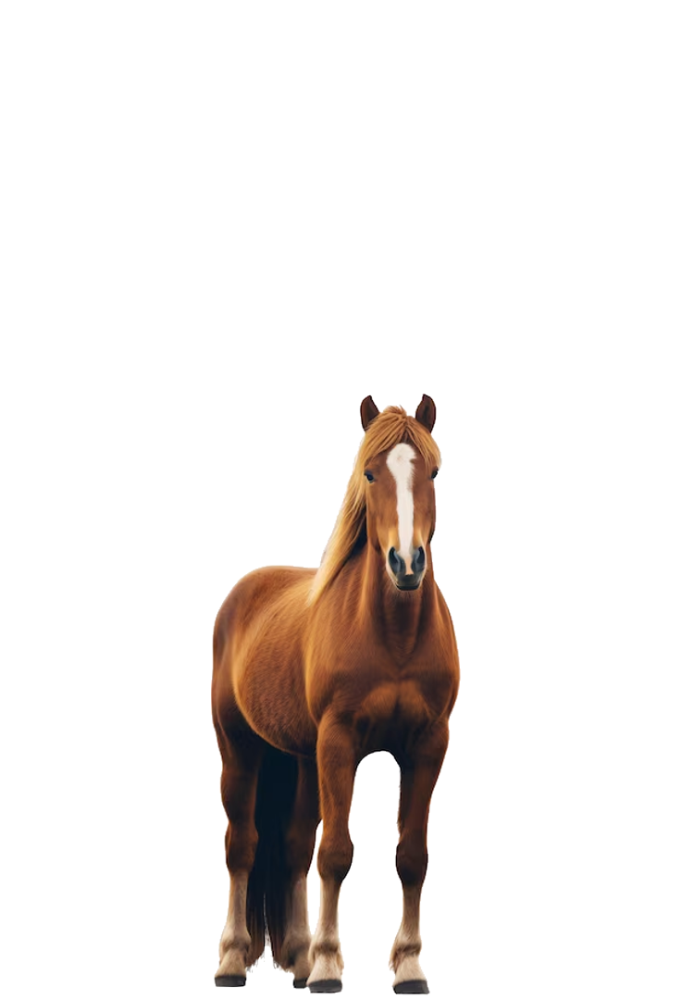
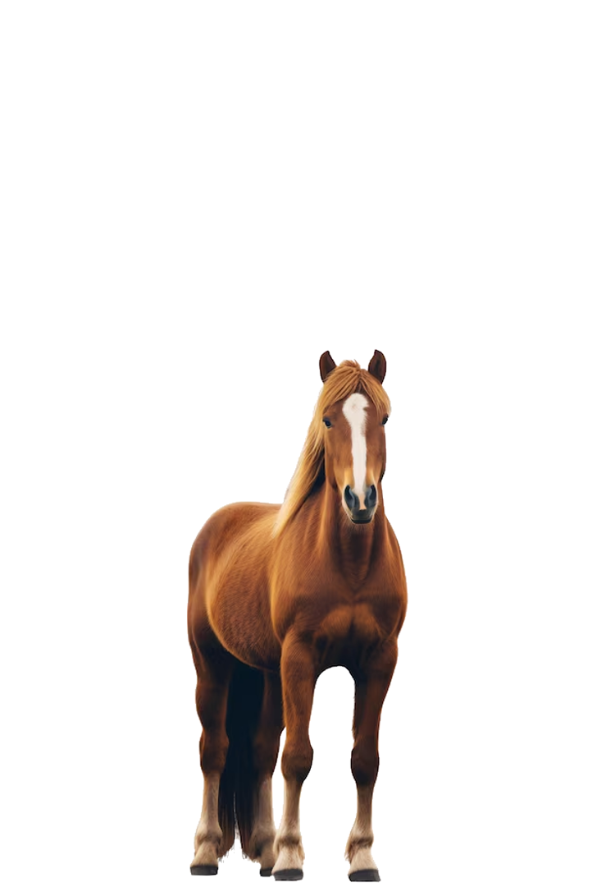
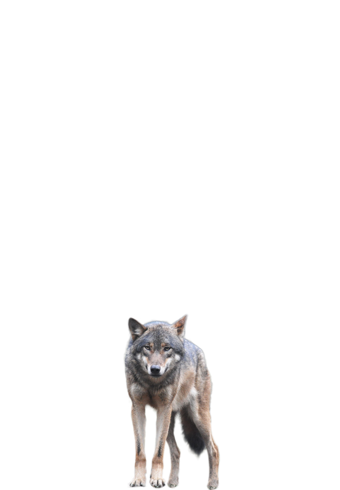
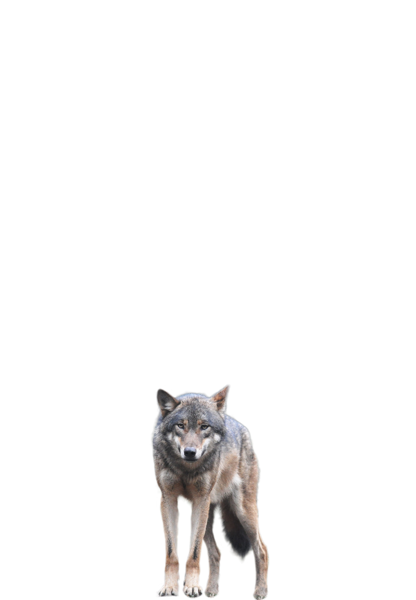

El método burbuja es un algoritmo de ordenamiento simple y fácil de entender, aunque no es el más eficiente. Funciona comparando pares de elementos adyacentes en una lista y los intercambia si están en el orden incorrecto (por ejemplo, si el primero es mayor que el segundo en un orden ascendente). Este proceso se repite varias veces hasta que la lista queda completamente ordenada. CaracterÃsticas principales: Iterativo: Hace múltiples pasadas sobre la lista. Comparativo: Compara elementos adyacentes. Intercambio: Realiza un "swap" si los elementos están fuera de orden. In-place: No necesita espacio adicional significativo, ya que se realiza directamente sobre la lista. Complejidad temporal: Peor caso: 𝑂(𝑛2) O(n2), cuando la lista está completamente desordenada. Mejor caso: 𝑂(𝑛) O(n), cuando la lista ya está ordenada y se detecta en la primera iteración.
El método burbuja mejorada es una optimización del método burbuja que intenta reducir el número de comparaciones innecesarias cuando la lista ya está parcialmente ordenada. La idea principal es usar una bandera (variable booleana) para detener el algoritmo si no se realizan intercambios durante una pasada, indicando que la lista ya está ordenada. CaracterÃsticas principales: Bandera para detección de orden: Si en una iteración completa no hay intercambios, el algoritmo termina. Eficiencia mejorada: Reduce las iteraciones innecesarias en listas ya ordenadas o casi ordenadas. Complejidad temporal: Peor caso: Sigue siendo 𝑂(𝑛2) O(n2) cuando la lista está completamente desordenada. Mejor caso: 𝑂(𝑛) O(n), ya que detecta que la lista está ordenada en la primera iteración.


 

 
